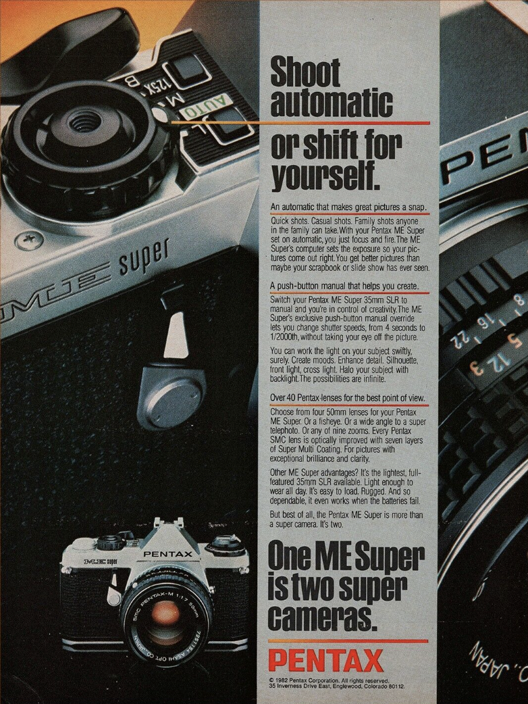
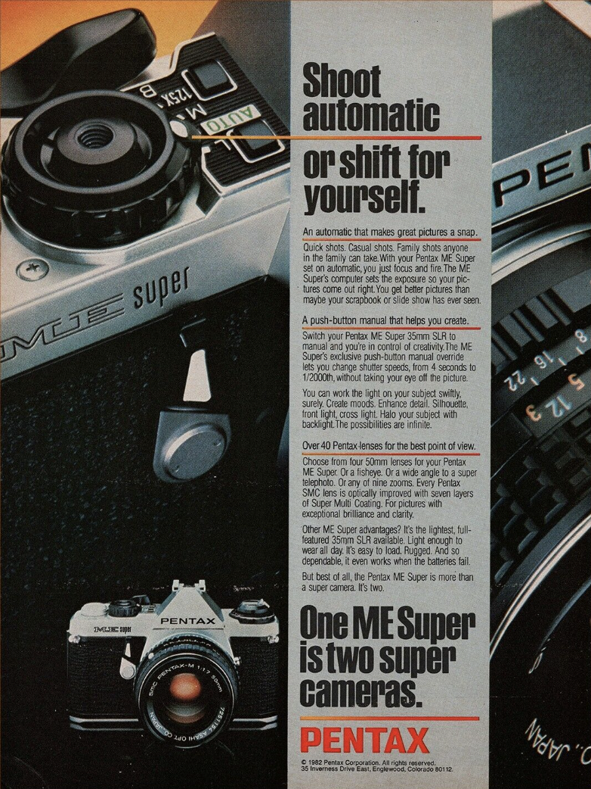

Electronic 35mm SLR.
Unusually compact, lightweight and solid. The ME Super is a great little camera with aperture-preferred automation as well as manual exposure.
The ME Super has a classic look because it is.
It's a real all-metal camera.
It has a huge 0.95x finder, much bigger than today's also-rans like the Nikon D4s (0.70x finder for $6,500) and Canon 1D X (0.76x finder for $7,000).
Runs forever on two common A76 button cells.
The ME Super adds manual exposure, a faster shutter and a dedicated flash contact to the older ME.
The K1000 is better known, while the ME Super was always a more advanced, smaller, lighter and better camera.
Highlights
Shutter-cocked indicator.
Film winding indicator on back.
Manual 1/125 X and Bulb settings are mechanical and need no batteries.
Traditional ground glass screen means great focus precision with fast lenses.
Limitations
No depth-of-field preview.
No auto exposure lock.
No aperture indication in finder.
Fixed finder screen, like modern DSLRs.
Traditional ground glass lenses are darker with slow lenses.
 
